전산응용토목제도기능사 (2012-10-20 기출문제)
1과목: 토목제도(CAD)
1. 재료의 강도란 물체의 하중이 작용할 때 그 하중에 저항하는 능력을 말하는데, 이때 강도 중 하중 속도 및 적용에 따라 분류되는 강도가 아닌 것은?
- 정적 강도
- 충격강도
- 피로 강도
- 릴렉세이션 강도
(정답률: 80%)

2. 휨모멘트를 받는 부재에서 ƒck=30MPa 일 때, 등각직사각형 응력블록의 깊이 a를 구하기 위한 계수 β1의 크기는?
- 0.815
- 0.830
- 0.836
- 0.850
(정답률: 51%)
3. 유효 높이 D=450㎜인 단 철근 직사각형 보에 압축을 받는 이형철근의 기본 정착 길이가 400㎜라면 압축 이형 철근의 정착 길이는? (단, 보정 계수는 0.75이다.)
- 250㎜
- 300㎜
- 350㎜
- 400㎜
(정답률: 53%)
4. 휨을 받는 콘크리트 보에 대한 설명으로 틀린 것은?
- 콘크리트는 인장강도에 강하나 압축강도에는 약하다.
- 철근의 탄성계수는 2.0×105 MPa를 표준으로 한다.
- 철근과 콘크리트의 변형율은 중립축으로부터 거리에 비례한다.
- 철근은 압축력보다 주로 인장력에 저항한다.
(정답률: 68%)
5. 보강용 섬유를 혼입하여 주로 연성, 균열 억제, 내충격성 및 내마모성 등을 높인 콘크리트는?
- 고강도 콘크리트
- 섬유보강 콘크리트
- 폴리머 시멘트 콘크리트
- 프리플레이스트 콘크리트
(정답률: 67%)
6. 지간 25m인 단순보에 고정하중 200kN/m, 휨하중 150kN/m이 작용하고 있다. 강도설계법으로 설계할 때 보에 작용하는 극한 하중은? (단, 하중계수는 콘크리트구조설계기준(2007)에 따른다.)
- 400kN/m
- 480kN/m
- 560kN/m
- 640kN/m
(정답률: 53%)
7. 철근의 이음에 대한 설명으로 옳지 않은 것은?
- 철근은 잇지 않는 것을 원칙으로 한다.
- 부득이 이어야 할 경우 최대 인장 응력이 작용하는 곳에서는 이음을 하지 않는 것이 좋다.
- 이음부를 한 단면에 집중시켜 같은 부분에서 잇는 것이 좋다.
- 철근의 이음 방법에는 겹침 이음법, 용접 이음법, 기계적인 이음법 등이 있다.
(정답률: 55%)
8. 콘크리트용으로 사용하는 부순돌(쇄석)의 특징으로 옳지 않은 것은?
- 시멘트와 부착이 좋다.
- 수밀성, 내구성 등이 약간 저하된다.
- 보통 콘크리트 보다 단위수량이 10% 정도 많이 요구 된다.
- 부순돌은 강자갈과 달리 거친 표면 조직과 풍화암이 섞여 있지 않다.
(정답률: 50%)
9. 철근콘크리트 보를 설계할 때 극한강도에서 압축 최대 변형률은 얼마로 가정 하는가?
- 0.001
- 0.0015
- 0.002
- 0.003
(정답률: 80%)
10. 스터럽과 띠철근의 135° 표준갈고리는 구부림 끝에서 최소 얼마 이상 연장되어야 하는가? (단, D25 이하의 철근이고, db는 철근의 공칭지름이다.)
- 2db 이상
- 4db 이상
- 6db 이상
- 8db 이상
(정답률: 57%)
11. 콘크리트의 시방 배합을 현장 배합으로 수정할 때 고려(보정)하여야 하는 것으로 짝지어진 것은?
- 골재의 비중 및 잔골재율
- 골재의 비중 및 표면수량
- 골재의 입도 및 잔골재율
- 골재의 입도 및 표면수량
(정답률: 43%)
12. 굳지 않은 콘크리트의 작업 후 재료 분리 현상으로 시멘트와 골재가 가라앉으면서 물이 올라와 콘크리트 표면에 떠오르는 현상은?
- 블리딩
- 크리프
- 레이턴스
- 워커빌리티
(정답률: 91%)
13. 철근을 일정한 간격으로 배근하는 이유로 옳은 것은?
- 철근이 부식되지 않게 하기 위하여
- 철근과 콘크리트가 부착력을 잘 발휘하도록 하기 위하여
- 철근의 응력이 다른 철근으로 잘 전달 되도록 하기 위하여
- 철근의 양쪽 끝이 콘크리트 속에서 미끄러지거나 빠져나오지 않도록 하기 위하여
(정답률: 36%)
14. 1방향 철근콘크리트 슬래브에 휨철근에 직사각방향으로 배근되는 수축-온도철근에 관한 설명으로 옳지 않은 것은?
- 수축-온도철근으로 배치되는 이형철근의 최소 철근비는 0.0014 이다.
- 수축-온도철근의 간격은 슬래브 두께의 5배 이하로 하여야 한다.
- 수축-온도철근의 최대 간격은 500㎜ 이하로 하여야 한다.
- 수축-온도철근은 설계기준항복강도를 발휘할 수 있도록 정착되어야 한다.
(정답률: 40%)
15. 골재알이 공기 중 건조 상태에서 표면건조 포화 상태로 되기까지 흡수하는 물의 양을 무엇이라 하는가?
- 함수량
- 흡수량
- 유효 흡수량
- 표면수량
(정답률: 73%)
16. 유효 깊이 d=550㎜, 등가직사각형 길이 a=100㎜, 철근의 단면적용 1500㎜2인 단철근 콘크리트 보의 공칭 모멘트는? (단, 철근의 항복강도는 400MPa 이다.)
- 300kN·m
- 330kN·m
- 300,000,000kN·m
- 330,000,000kN·m
(정답률: 33%)
17. 현장치기 콘크리트에서 수중에서 타설하는 콘크리트의 최소 피복 두께는?
- 120㎜
- 100㎜
- 80㎜
- 60㎜
(정답률: 76%)
18. 하중을 분포시키거나 균열을 제어할 목적으로 주철근과 직각에 가까운 방향으로 배치한 보조철근은?
- 배력철근
- 굽힘철근
- 비틀림철근
- 조립용철근
(정답률: 84%)
19. 폭 b=400mm, 유효깊이 d=500mm인 단철근 직사각형보에서 인장철근비는? (단, 철근의 단면적 As=4000mm2)
- 0.02
- 0.03
- 0.04
- 0.⑤
(정답률: 61%)
20. 시멘트의 응결을 빠르게 하기 위한 것으로서 숏크리트, 그라우트에 의한 지수 공법 등에 사용되는 혼화제는?
- 급결제
- 촉진제
- 지연제
- 발포제
(정답률: 67%)
2과목: 철근콘크리트
21. 교량을 중심으로 세계 토목 구조물의 역사를 보면 재료 및 신기술의 발전과 사회 환경의 변화로 장대교량이 출현한 시기는?
- 기원 전 1~2세기
- 9~10세기
- 11~18세기
- 19~20세기 초
(정답률: 64%)
22. 교량 설계에서 하중을 주하중, 부하중, 주하중에 상당하는 특수하중, 부하중에 상당하는 특수하중으로 구분할 때 주하중이 아닌 것은?
- 풍하중
- 활하중
- 고정하중
- 충격하중
(정답률: 58%)
23. 슬래브에 대한 설명으로 옳지 않은 것은?
- 슬래브는 두께에 비하여 폭이 넓은 판모양의 구조이다.
- 2방향 슬래브는 주철근의 배치가 서로 직각으로 만나도록 되어 있다.
- 주철근의 구조에 따라 크게 1방향 슬래브, 2방향 슬래브로 구별할 수 있다.
- 4변에 의해 지지되는 슬래브 중에서 단면에 대한 장변의 비가 4배를 넘으면 2방향 슬래브로 해석한다.
(정답률: 71%)
24. 철근 콘크리트가 건설 재료로서 널리 사용되는 이유가 아닌 것은?
- 철근과 콘크리트는 부착이 매우 잘 된다.
- 철근과 콘크리트의 항복응력이 거의 같다.
- 콘크리트 속에 묻힌 철근은 녹이 슬지 않는다.
- 철근과 콘크리트는 온도에 대한 열팽창계수가 거의 같다.
(정답률: 70%)
25. 토목 구조물의 종류에서 합성 구조에 대한 설명으로 옳은 것은?
- 외력에 대한 불리한 응력을 상쇄할 수 있도록 미리 인위적인 내력을 준 콘크리트 구조
- 강재로 이루어진 구조로 부재의 치수를 작게 할 수 있으며 공사 기간이 단축되는 등의 장점이 있는 구조
- 강재의 보 위에 철근 콘크리트 슬래브를 이어 쳐서 양자가 일체로 작용하는 구조
- 콘크리트 속에 철근을 배치하여 양자가 일체가 되어 외력을 받게 한 구조
(정답률: 48%)
26. 구조 재료로서 강재의 단점이 아닌 것은?
- 정기적인 도장이 필요하다.
- 지간이 짧은 곳에만 사용이 가능하다.
- 반복 하중에 의한 피로가 발생되기 쉽다.
- 연결 부위로 인한 구조 해석이 복잡할 수 있다.
(정답률: 62%)
27. 2개 이상의 기둥을 1개의 확대 기초로 지지하도록 만든 기초는?
- 경사 확대 기초
- 독립 확대 기초
- 연결 확대 기초
- 계단식 확대 기초
(정답률: 72%)
28. 기둥에서 종방향 철근의 위치를 확보하고 전단력에 저항하도록 정해진 간격으로 배치된 횡방향의 보강 철근을 무엇이라 하는가?
- 주 철근
- 절곡 철근
- 인장 철근
- 띠 철근
(정답률: 66%)
29. 상부 수직 하중을 하부 지반에 분산시키기 위해 저면을 확대시킨 철근 콘크리트판은?
- 확대 기초판
- 플랫 플레이트
- 슬래브판
- 비내력벽
(정답률: 72%)
30. 프리스트레스 콘크리트보의 설계를 위한 가정 사항이 아닌 것은?
- 콘크리트는 전단면이 유효하게 작용한다.
- 부재의 길이 방향의 변형률은 중립축으로부터 거리에 비례한다.
- 콘크리트는 소성 재료로 PS강재는 탄성 재료로 가정한다.
- 부착되어 있는 PS강재 및 철근은 각각 그 위치의 콘크리트의 변형률과 같은 변형률을 일으킨다.
(정답률: 32%)
31. 철근 콘크리트의 특징에 대한 설명으로 옳지 않은 것은?
- 내구성, 내화성, 내진성이 우수하다.
- 균열 발생이 없고, 경사 및 개조 해체 등이 쉽다.
- 여러 가지 모양과 치수의 구조물을 만들기 쉽다.
- 다른 구조물에 비하여 유지 관리비가 적게 든다.
(정답률: 73%)
32. 교량을 상부 구조와 하부 구조로 구분할 때 하부 구조에 해당하는 것은?
- 바닥판
- 바닥틀
- 주트러스
- 교각
(정답률: 65%)
33. 위험 단면에서 1방향 슬래브의 정모멘트 철근 및 부모멘트의 철근의 중심 간격은?
- 슬래브 두께의 2배 이하, 또는 200㎜ 이하
- 슬래브 두께의 2배 이하, 또는 300㎜ 이하
- 슬래브 두께의 4배 이하, 또는 400㎜ 이하
- 슬래브 두께의 4배 이하, 또는 500㎜ 이하
(정답률: 77%)
34. 프리스트레스트 콘크리트의 포스트 텐션 공법에 대한 설명으로 옳지 않은 것은?
- PS강재를 긴장한 후에 콘크리트를 타설한다.
- 콘크리트가 경화한 후에 PS강재를 긴장한다.
- 그라우트를 주입시켜 PS강재를 콘크리트와 부착시킨다.
- 정착 방법에는 쐐기식과 지압식이 있다.
(정답률: 49%)
35. 강 구조의 판형교에 대한 설명으로 옳은 것은?
- 전단력은 주로 복부판으로 저항한다.
- 일반적으로 주형의 단면은 휨모멘트에 대하여 고려하지 않아도 된다.
- 풍하중이나 지진 하중 등의 수평력에 저항하기 위하여 주형의 하부에 수직 브레이싱을 설치한다.
- 주형의 횡단면에 대한 비틀림을 방지하기 위해 경사 방향으로 교차하여 사용하는 부재를 스트럽이라 한다.
(정답률: 20%)
36. 도면의 치수기입 원칙이 아닌 것은?
- 치수는 계산할 필요가 없도록 기입해야 한다.
- 치수는 될 수 있는 대로 주투상도에 기입해야 한다.
- 정확성을 위하여 반복적으로 중복해서 치수기입을 해야 한다.
- 길이와 크기, 자세 및 위치를 명확하게 표시해야 한다.
(정답률: 78%)
37. 협소한 부분의 치수를 기입하기 위하여 사용하는 것은?
- 인출선
- 기준선
- 중심선
- 외형선
(정답률: 81%)
38. 도로 설계에 대한 순서가 옳은 것은?
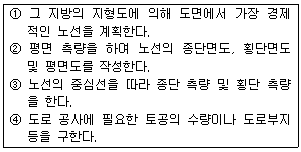
- ① → ② → ③ → ④
- ① → ③ → ② → ④
- ② → ① → ③ → ④
- ② → ③ → ① → ④
(정답률: 50%)
39. 국제 및 국가별 표준규격 명칭과 기호 연결이 옳지 않은 것은?
- 국제 표준화 기구 - ISO
- 영국 규격 - DIN
- 프랑스 규격 - NF
- 일본 규격 - JIS
(정답률: 78%)
40. 보기의 입체도에서 화살표 방향을 정면으로 할 때 평면도를 바르게 표현한 것은?
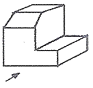
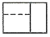
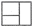
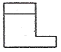
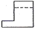
(정답률: 76%)
3과목: 토목일반구조
41. 재료단면의 경계표시 중 지반면(흙)을 나타낸 것은?
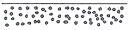
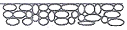
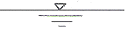
(정답률: 88%)
42. 컴퓨터 연산 장치의 구성 요소로 옳지 않은 것은?
- 누산기(accumulator)
- 가산기(adder)
- 명령 레지스터(instruction register)
- 상태 레지스터(status register)
(정답률: 41%)
43. 문자의 선 굵기는 한글자, 숫자 및 영자일 때 문자 크기의 호칭에 대하여 얼마로 하는 것이 바람직한가?
- 1/3
- 1/6
- 1/9
- 1/12
(정답률: 77%)
44. KS에서 원칙으로 하는 정투상도 그리기 방법은?
- 제1각법
- 제3각법
- 제5각법
- 다각법
(정답률: 86%)
45. 토목제도를 목적과 내용에 따라 분류하는 것으로 옳은 것은?
- 설계도 - 중요한 치수, 기능, 사용되는 재료를 표시한 도면
- 계획도 - 설계도를 기준으로 작업 제작에 이용되는 도면
- 구조도 - 구조물과 관련 있는 지형 및 지질을 표시한 도면
- 일반도 - 구조도에 표시하기 곤란한 부분의 형상, 치수를 표시한 도면
(정답률: 32%)
46. 컴퓨터를 사용하여 제도 작업을 할 때의 특징과 가장 거리가 먼 것은?
- 신속성
- 정확성
- 응용성
- 도덕성
(정답률: 89%)
47. 단면 형상에 따른 절단면 표시에 관한 내용으로 파이프를 나타낸 그림은?
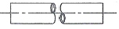
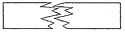
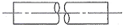
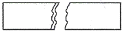
(정답률: 79%)
48. 다음 중 콘크리트 구조물에 대한 상세도 표준의 축척으로 가장 적당한 것은?
- 1 : 5
- 1 : 50
- 1 : 100
- 1 : 200
(정답률: 37%)
49. 배근도의 치수가 “7@250=1750”으로 표시되었을 때 이에 따른 설명으로 옳은 것은?
- 철근의 길이가 250㎜이다.
- 배열된 철근의 갯수는 알 수 없다.
- 철근과 다음 철근의 간격이 1750㎜이다.
- 철근을 250㎜ 간격으로 7등분하여 배열하였다.
(정답률: 83%)
50. 물체를 평행으로 투상하여 표현하는 투상도가 아닌 것은?
- 정투상도
- 사투상도
- 투시 투상도
- 표고 투상도
(정답률: 23%)
51. 선의 종류와 용도에 대한 설명으로 옳지 않은 것은?
- 외형선은 굵은 실선으로 긋는다.
- 치수선은 가는 실선으로 긋는다.
- 숨은선은 파선으로 긋는다.
- 윤곽선은 1점 쇄선으로 긋는다.
(정답률: 77%)
52. 투시 투상도의 종류 중 인접한 두 면이 각각 화면과 기면에 평행한 때의 것은?
- 평행 투시도
- 유각 투시도
- 경사 투시도
- 정사 투시도
(정답률: 83%)
53. 토목제도에 통용되는 일반적인 설명으로 옳은 것은?
- 축척은 도면마다 기입할 필요가 없다.
- 글자는 명확하게 써야 하며, 문장은 세로로 위쪽부터 쓰는 것이 원칙이다.
- 도면은 될 수 있는 대로 실선으로 표시하고, 파선으로 표시함을 피한다.
- 대칭이 되는 도면은 중심선의 양쪽 모두를 단면도로 표시한다.
(정답률: 59%)
54. 그림과 같은 축도기호가 나타내고 있는 것으로 옳은 것은?
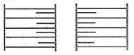
- 등고선
- 성토
- 절토
- 과수원
(정답률: 78%)
55. 제도용지의 세로와 가로의 비로 옳은 것은?
- 1 : 1
- 1 : 2
- 1 : √2
- 1 : √3
(정답률: 92%)
56. 도면을 철하기 위해 표제란에서 가장 떨어진 왼쪽 끝에 두는 구멍 뚫기의 여유를 설치할 때 최소 나비는?
- 5mm
- 10mm
- 15mm
- 20mm
(정답률: 43%)
57. 그림이 나타내고 있는 재료는?
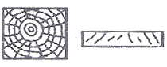
- 목재
- 석재
- 강재
- 콘크리트
(정답률: 92%)
58. 그림과 같은 재료의 단면 중 벽돌에 대한 표시로 옳은 것은?
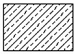
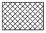
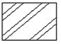
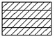
(정답률: 86%)
59. 도면에 그려야 할 내용의 영역을 명확하게 하고, 제도 용지의 가장 자리에 생기는 손상으로 기재 사항을 해치지 않도록 하기 위하여 표시하는 것은?
- 비교눈금
- 윤곽선
- 중심마크
- 중심선
(정답률: 73%)
60. 행과 열로 구성되어 각 셀의 값을 계산하도록 도와주는 프로그램은?
- 컴파일러
- 스프레드시트
- 프레젠테이션
- 워드 프로세서
(정답률: 54%)